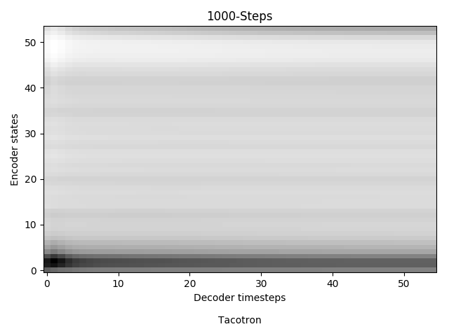
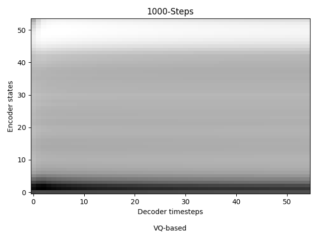

1. “Does the quick brown fox jump over the lazy dog.” Tacotron: Proposed: 2. “Generative adversarial network or variational auto-encoder.” Tacotron: Proposed: 3. “Talib Kweli confirmed to AllHipHop that he will be releasing an album in the next year.” Tacotron: Proposed: 4. “The buses aren't the problem, they actually provide a solution.” Tacotron: Proposed:
1 hour training data:
1. “I'm pleased to get through the opening match.” Tacotron: Proposed: 2. “About half the people who are infected also lose weight” Tacotron: Proposed: 2 hours training data:
1. “I'm pleased to get through the opening match.” Tacotron: Proposed: 2. “About half the people who are infected also lose weight” Tacotron: Proposed: 4 hours training data:
1. “I'm pleased to get through the opening match.” Tacotron: Proposed: 2. “About half the people who are infected also lose weight” Tacotron: Proposed:
 